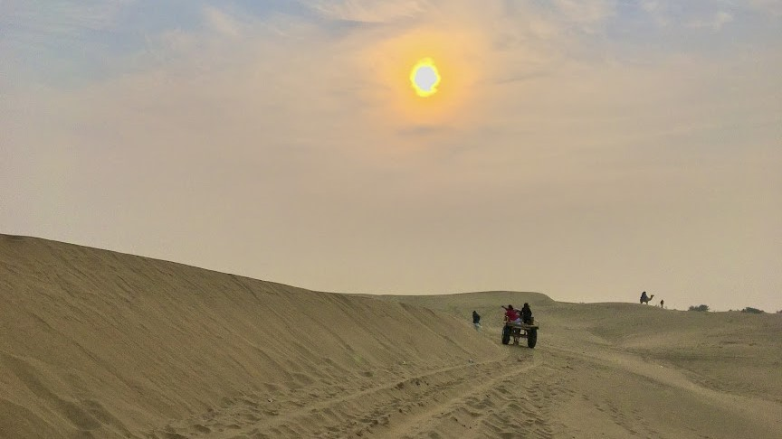

ON THE ROAD START TO 2020 : EXPLORING THE GRANDIOSE OF THAR
It all started while having a random conference call with my friends in the evening on 29th December 2019. I came up with a plan to welcome 2020 on road rather than in a pub. It took some time to convince but the discussion materialized and we four were all set to explore the grandiose of the Thar Desert in the state of Rajasthan for the first four days of the fast approaching new year. It was decided that the first destination shall be Bikaner and rest may follow as we go with the flow.